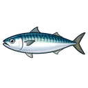

このエリアで今週釣れている魚 無料
伊東では今週20件・1船宿から釣果報告があります。イサキ・シマアジ・メジナ・タカベなど6種の釣果が確認されています。なかでもイサキが42匹の最高釣果で好調です。

サバ伊東エリアで釣れる魚種
★ 今週実績あり（6魚種）
船宿一覧 無料
主要ポイント（TOP3）
魚種別 旬カレンダー 無料
| 1月 | 2月 | 3月 | 4月 | 5月 | 6月 | 7月 | 8月 | 9月 | 10月 | 11月 | 12月 | |
|---|---|---|---|---|---|---|---|---|---|---|---|---|
| 数釣 | ||||||||||||
| 型釣 |
| 1月 | 2月 | 3月 | 4月 | 5月 | 6月 | 7月 | 8月 | 9月 | 10月 | 11月 | 12月 | |
|---|---|---|---|---|---|---|---|---|---|---|---|---|
| 数釣 |
| 1月 | 2月 | 3月 | 4月 | 5月 | 6月 | 7月 | 8月 | 9月 | 10月 | 11月 | 12月 | |
|---|---|---|---|---|---|---|---|---|---|---|---|---|
| 数釣 |
| 1月 | 2月 | 3月 | 4月 | 5月 | 6月 | 7月 | 8月 | 9月 | 10月 | 11月 | 12月 | |
|---|---|---|---|---|---|---|---|---|---|---|---|---|
| 数釣 |
| 1月 | 2月 | 3月 | 4月 | 5月 | 6月 | 7月 | 8月 | 9月 | 10月 | 11月 | 12月 | |
|---|---|---|---|---|---|---|---|---|---|---|---|---|
| 数釣 |
| 1月 | 2月 | 3月 | 4月 | 5月 | 6月 | 7月 | 8月 | 9月 | 10月 | 11月 | 12月 | |
|---|---|---|---|---|---|---|---|---|---|---|---|---|
| 数釣 |
エリアガイド
伊東
このエリアについて
伊東は静岡県伊東市、伊豆半島東岸に開けた温泉観光都市で、その玄関口となる伊東港は相模灘に直接面しています。半島の東側は岸からほど近い沖合で急に水深が増す急深地形が連なり、伊東港の沖もまた深場へとつながる起伏に富んだ海底をもちます。沖を流れる黒潮の支流が暖かい水を運び込むため、相模灘特有の回遊魚と根魚の双方が集まりやすく、温暖な気候とあいまって周年を通じて多彩な魚が狙える土地柄として知られます。政一丸・村正丸といった地元の遊漁船が、この恵まれた漁場を拠点に出船しています。
魚種ごとの旬を見ると、イサキは6月・5月・7月に乗りが安定し、25cmから44cmと食べ頃の中型がそろいます。アジは10月・9月・12月が狙い目で、35cmから50cmと型ものが期待でき、マダイは2月・10月・9月に分かれて顔を出します。回遊もののイナダは9月・10月・11月、シマアジとカンパチは秋から初冬の9月・10月・11月から12月にかけて。冬場はカイワリが11月・12月・1月に23cmから41cm、キントキが12月・1月・2月に25cmから43cmと、寒い時期も狙いものが切れません。
春のイサキから秋の青物、冬のカイワリやキントキまで、季節ごとに主役が入れ替わるのが伊東港の面白さです。一隻で多様な釣りを楽しめる懐の深さは、相模灘の急深地形と暖流の恩恵を色濃く受けた漁場ならではといえるでしょう。
船釣り全般の Q&A（服装・船酔い・予約・ライフジャケット等）はよくある質問ページにまとめています。
よくある質問
伊東釣果データから分かること
伊東で釣れる魚は何ですか？
2023年以降の伊東の釣果データは762便・29魚種が記録されています。件数の多い順にイサキ（143便・4〜6月が好機）、メジナ（105便・4〜6月が好機）、マダイ（86便・4〜5月が好機）が主力です。潮回り・水温・季節で構成は変動するため、本ページの旬カレンダーや最新の釣果カードも併せてご確認ください。
伊東エリアへのアクセス方法は？
伊東への最寄りICは石橋IC（西湘バイパス）から国道135号を南下、最寄り駅はJR伊東線・伊豆急行線 伊東駅です。港周辺に有料駐車場が点在し、1時間あたり150円から200円程度、1日最大850円から1500円程度が目安です。集合場所や料金の詳細は船宿ごとに異なるため、予約時または本ページの船宿一覧から各船宿のウェブサイトをご確認ください。
伊東でおすすめの釣り物と時期は？
過去3年間の伊東での月別実績を集計すると、春（3〜5月）はイサキ（71件）、夏（6〜8月）はイサキ（38件）、秋（9〜11月）はアジ（24件）、冬（12〜2月）はアジ（18件）が代表的なターゲットです。魚種ごとに釣れる時期が異なるため、本ページの旬カレンダーで詳細な月別釣れ具合をご確認ください。
伊東でよく出船する船宿は？
過去3年間の伊東での釣果データは計2船宿で記録されています。村正丸（838便）、政一丸（19便）が記録上の主力船宿です。各船宿で出船日・料金・対象魚種が異なるため、本ページの船宿一覧から詳細をご確認ください。